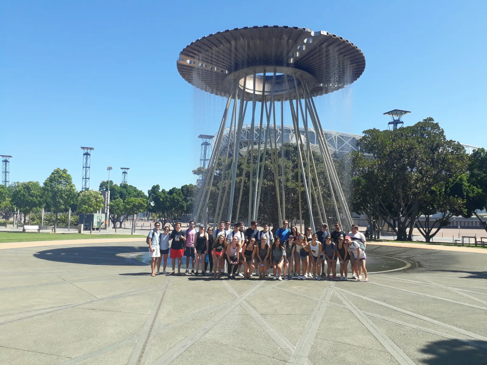

National Sports Federations
Centenary books and anniversary works, ‘History of’ series, governance and institutional histories, archival and statistical verification, and editorial management for multi-author volumes.
Sports historian · Commissioned histories & heritage consulting
Evidence-led anniversary books, institutional histories and heritage content for sporting federations, Olympic bodies and the brands that partner with them.
Published and affiliated
About

David A. Holmes, PhD (UNSW), is a leading authority on the history and politics of sport, with particular specialisation in athletics (track and field), the ancient and modern Olympics, and sport in ancient Rome.
Commissioned by sporting organisations, publishers, and magazines to research and write institutional histories, feature articles, and heritage content, he combines doctoral-level rigour with clear, engaging storytelling. He is the author of ‘Athletics Through Time’, the ongoing historical feature series in Athletics Weekly (18 instalments since July 2025), and a contributor to the Journal of Olympic History and other publications.
Backed by more than 20 years of university teaching and senior editorial roles with Springer Nature and BAR Publishing, Dr Holmes is available worldwide for commissioned organisational and anniversary histories, working remotely to agreed deadlines.
Tailored services
Centenary books and anniversary works, ‘History of’ series, governance and institutional histories, archival and statistical verification, and editorial management for multi-author volumes.
Bid, milestone and Games histories, exhibition and museum textual timelines, and evidence-led heritage content.
Research-led historical narratives, milestone storytelling, and fact-checked heritage content to support campaigns and partnerships.
‘David Holmes is ... a fine sporting storyteller of great versatility. His work blends an academic’s scrupulous attention to research and detail, but also displays an eye for the interesting and unusual which makes for a winning combination.’
Philip Barker
Editor, Journal of Olympic History
Send a brief outline of your organisation, the project, your key dates and a rough budget range. Replies within three working days.